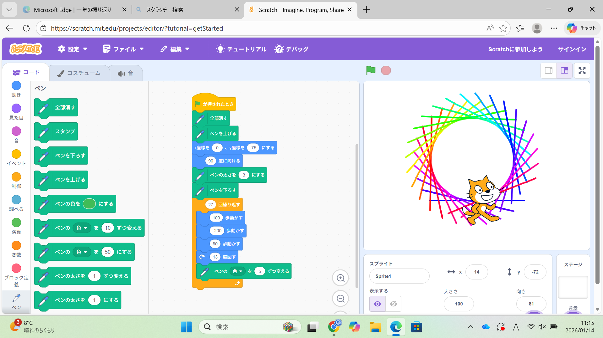
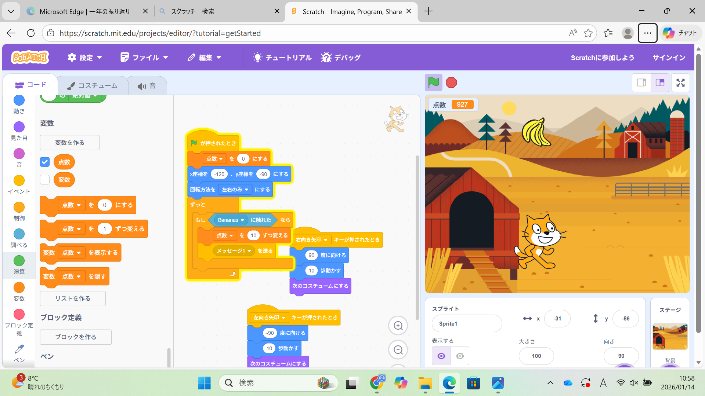

第1週目
1-1 サイエンスアート

スクラッチを使い、猫が移動した痕跡が模様となって、サイエンスアートを作成する。色は変更が可能で、様々なグデーションを作った。
角度、回数を計算しつつ、試行錯誤する。
2.感想
回数が1回、角度が1,2度違うだけで全く違った模様、位置になるので、良い意味でも悪い意味でも繊細だと感じた。回数が大きな数になるほど、
予測することが難しくなった。
1-2 ゲーム

1.内容
上から落下する物体をキャッチするとポイントがたまっていくゲームを作成した。落下速度を乱数のブロックを使って、ランダムに
設定できる。
2.感想
落下する物体を変えられてよかった。スクラッチの移動方向を上下や左右だけに制限できる機能に驚いた。物体の落下速度を早くして
難易度をあげたりすることでゲーム要素を強くすることができて楽しかった。
ko-0206
1-3 ホームページ作成
<
私のホームページ
1.内容
githubを使いホームページ作成した。スクラッチの保存した画像を追加することがきる。
2.感想
学習した内容を実践したときに自分が感じた感想を
自分で考えた文章で作成する（50文字以上．100文字程度を推奨．※生成AIを使ってはいけない）